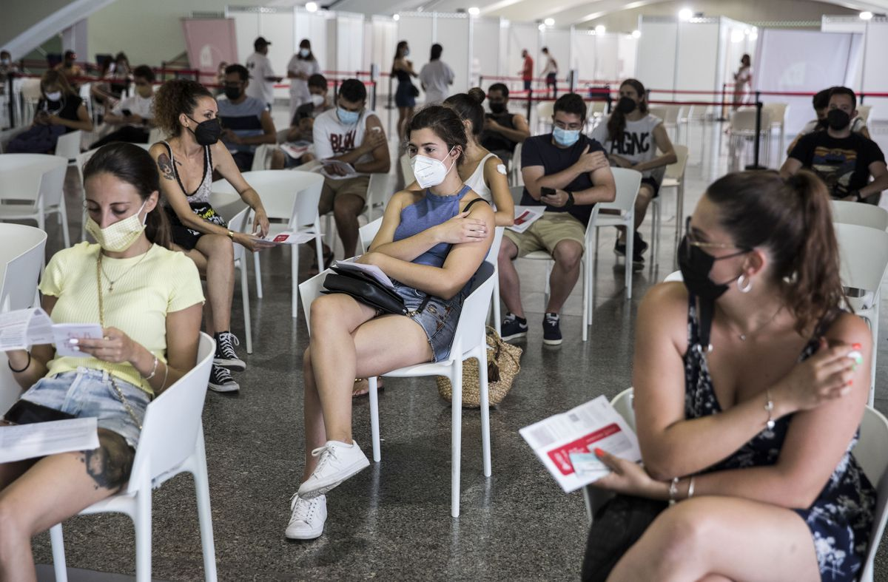

¡Tema mítico!Ayn Randiano, y su muro vacunal que preveía....
Y hemos cogido una pertiga y lo hemos saltado, ni 40%, ni 50%, ni 60%.
Así va la vacunación en España: la mitad de los veinteañeros ya ha recibido al menos una dosis
La llegada de más viales prevista para este mes acerca la meta del 70% de pautas completas en agosto.El riesgo en el periodo vacacional es que la población deje de acudir masivamente

Los veinteañeros comenzaron a recibir su primera dosis de la vacuna contra la covid-19 la semana pasada en la Ciudad de las Artes y las Ciencias de Valencia.
La llegada de más viales prevista para este mes acerca la meta del 70% de pautas completas en agosto.El riesgo en el periodo vacacional es que la población deje de acudir masivamente
www.google.com
Magufos y 'ejpertoh' del foro, con el culo en llamas.
A partir del 60% ya les cuesta encontrar voluntarios para el pinchazo https://elpais.com/espana/catalunya/2021-06-03/cataluna-admite-problemas-para-completar-la-vacunacion-a-partir-del-60-de-inmunizados-en-cada-franja.html?rel=listapoyo La vacunación es más difícil una vez se sobrepasa el 60%...
www.burbuja.info
Posted On: 2021-08-04T00:00:00
Posted By: Penitenciagite!!
Pero no os preocupéis, el 70% (por ahora, que se llegará al 90% o al 99%) de españoles van a morir, algún día, claro, no somos inmortales.
Vosotros tampoco, eh, magufos, no os penséis que lo vais a heredar todo.
Por muchos trimestres sueltos que hayáis hecho de 'inmunología' en no sé dónde.
Posted On: 2021-08-04T00:00:00
Posted By: Penitenciagite!!
Ja ja ja
Menudo 'muro vacunal', sólo os queda el insulto y la rabia.
Posted On: 2021-08-04T00:00:00
Posted By: Penitenciagite!!
Que puta lástima damos.
Ya se está vacuando a los niños, y los magufos con 40 o 50 años que andan por este foro, hablando aún del grafeno, el 5G y los reptilianos y la Federación Galáctica.
Posted On: 2021-08-04T00:00:00
Posted By: Penitenciagite!!
Obsesión la vuestra, que ensuciáis el principal con basura magufa cada día.
Lo que os jode es que os lleven la contraria, por qué ya estáis en plan SECTA
Los hechos y la realidad son los que son.
70% de población vacunada en Agosto.
Ni muros vacunales ni leches.
Punto.
Va a venir aquí el soberbio Aún Randiano, reconociendo que a EMGAÑADO, o que se a equivocado en su 'predicción'.
Bueno, igualmente no podrá hacerlo, a ese magufo lo tengo en el ignore.Últimamente he mandado a mucha gente en el ignore, a embusteros y vendehumos, no los leo ni quiero.
Posted On: 2021-08-04T00:00:00
Posted By: Penitenciagite!!
Enga, otro loco al ignore.
Posted On: 2021-08-04T00:00:00
Posted By: Penitenciagite!!
Pero si estaba claro, ¿acaso no se han visto colas de universitarios para hacerse pcr?Quien tuviera alguna fe en la juventud de este país es que no conoce a muchos jóvenes...
Posted On: 2021-08-04T00:00:00
Posted By: Mirigar
Ah bueno, que tenemos que darle credibilidad a un medio covidiano y sus datos que si no se los inventa sabe Dios quien se los da
No hay burbuja económica la crisis del 2008 fueron culpa de la subprime en Irak había armas de destrucción masiva creare 1.000.000 de puestos de trabajo estamos en la champions de la economía no pactaré con podemos son seguras y eficaces y vamos al 70%
Posted On: 2021-08-04T00:00:00
Posted By: Cosme Oriol
Penitenciagite!!dijo: Pero no os preocupéis, el 70% (por ahora, que se llegará al 90% o al 99%) de españoles van a morir, algún día, claro, no somos inmortales.Vosotros tampoco, eh, magufos, no os penséis que lo vais a heredar todo.Por muchos trimestres sueltos que hayáis hecho de 'inmunología' en no sé dónde.
Cual te han puesto a ti y cuantas llevas?
Posted On: 2021-08-04T00:00:00
Posted By: ULTRAPACO
ULTRAPACO dijo: Cual te han puesto a ti y cuantas llevas?
Lo menos 20 lleva míralo el tío más sano que la virgen
Posted On: 2021-08-04T00:00:00
Posted By: Talabera
Penitenciagite!!dijo: Enga, otro loco al ignore.
Hola k aseh
Posted On: 2021-08-04T00:00:00
Posted By: Talabera
España a la cabeza de la vacunacion, no se de que nos extrañamos, si entre que es gratis y la envidia de este país, me extraña que no haya ostias para pincharse, en este país somo así, de natural 'y yo más', sin tener nada que ver o si ¿os acordáis cuando salieron los GPS?Todo el mundo llevaba uno, incluso gente que solo usaba el coche para hacer el mismo recorrido de toda la vida, pues esto es algo parecido, en mi caso sólo mi mujer y yo y las niñas que no vamos a vacunar si no nos obligan, además de unos tíos de mi mujer, ya no conozco a nadie más sin vacunar, y lo de las mascarillas es digno de estudio.
Posted On: 2021-08-04T00:00:00
Posted By: Joloan
Content Date: 2021-08-04
Download Date: 2021-09-09
Document ID: L0C04G1UV